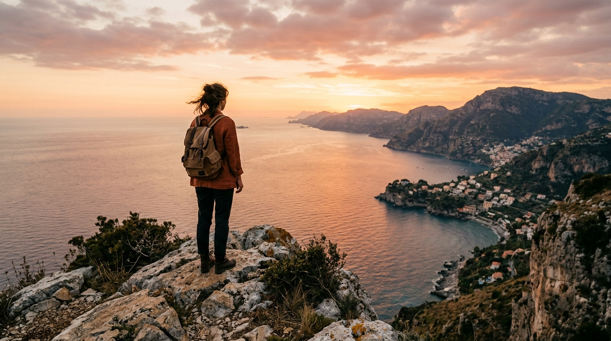
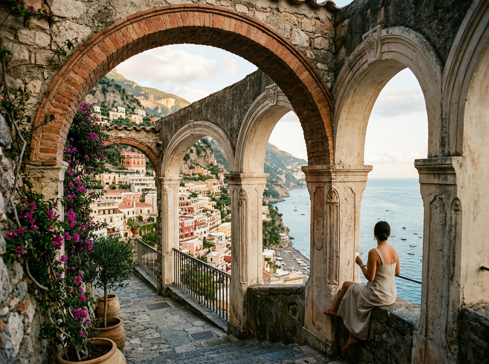
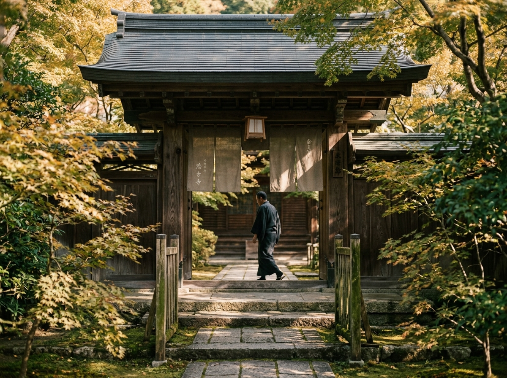
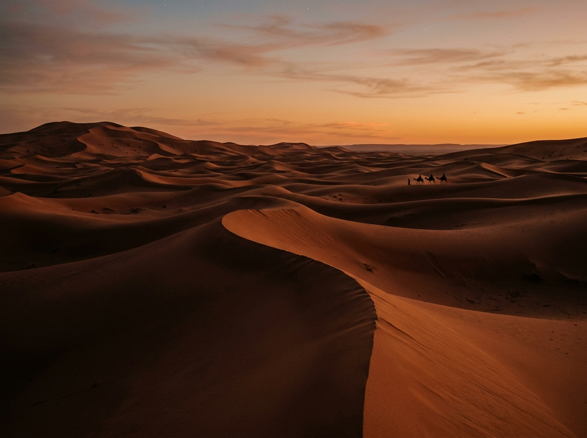
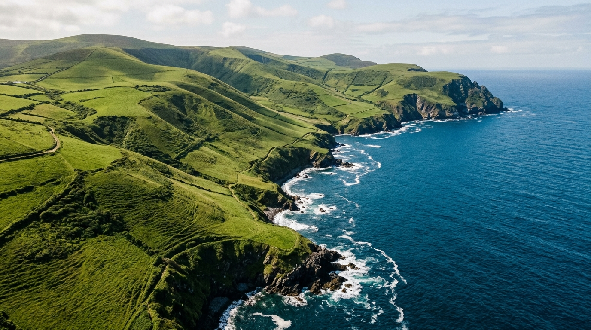

Studio Narrative creates editorial travel scripts and cinematic films, mapping the silent dialogue between landscape topography and raw architectural objects.




We do not design typical tourist itineraries or commercial films. Narrative approach treats every travel route as a storyboard and every editing frame as a coordinate point. We map luxury experiences where landscape topography meets artistic film composition.